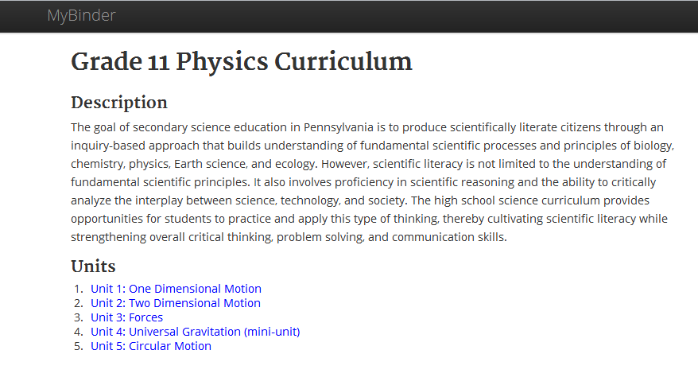

myBinder
myBinder is a curriculum sharing and management app. I worked with administrators and teachers at Pittsburgh Public Schools to understand how putting the high school physics curriculum online might better support teachers' and administrators' work.
For this project, I worked with the Science Curriculum Specialist and high school Physics teachers of Pittsburgh Public Schools. Initially, the Curriculum Specialist had explained that he wanted to put the high school physics curriculum on a website.
After contextual interviews with the curriculum specialist and teachers throughout the district, I helped clarify the goals for the curriculum website, like making the curriculum more navigable for teachers and allowing teachers to share their materials remotely and asynchronously.
The focus for this product was the UX design and back-end development, rather than the visual design (which is based on the Twitter Bootstrap framework).